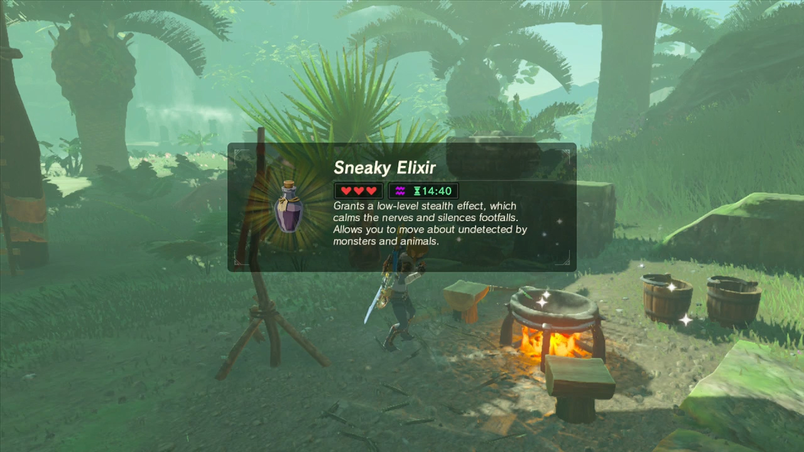

Sneaky Elixir

Description
What's worse than doing something wrong and being caught? Cut that crap out with this recipe. After slurping this down, you'll be less detectable somehow.
Ingredients
- Sunset Firefly
- Monster Parts
Steps
- Find a firely at sunset.
- Get, like, a part off a monster.
- Throw it in a skillet over an open flame for 5 seconds.
- Voila! Now you're ready to be real sneaky.